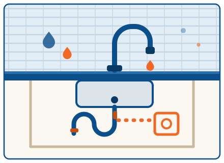
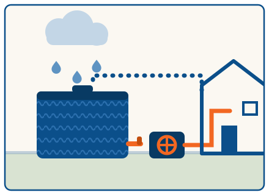

Bathroom renovation rough-in
Jordan SpringsFull rough-in for a family ensuite and main bathroom — new drops, floor wastes and shower mixers, all set out to the tiler's plans. Passed inspection first go and handed over ready for sheeting.

315L hot water system swap
Emu PlainsThe old cylinder let go overnight, so we supplied and fitted a 315L electric unit the same day — new valves, drain line and drip tray included. Old system carted away, hot showers back by dinner.

Strata backflow compliance
South PenrithAnnual testing of double check valve assemblies across a 24-unit strata block, with one worn device replaced on the day. Reports lodged with the water authority before we left the car park.

After-hours burst pipe repair
CranebrookAn 11pm call about water pooling behind the laundry — Mitch had the main isolated, the split section cut out and re-jointed within the hour. Because we did the repair, the call-out fee came off the bill.

Full kitchen re-plumb
PenrithComplete re-plumb during a kitchen renovation — sink relocated to the island, new dishwasher and fridge points, and quality quarter-turn tapware throughout. Coordinated with the cabinet maker so nothing held up the install.

Rainwater tank & pump hookup
MulgoaA 5,000L slimline tank plumbed to the laundry, toilets and garden taps through a pressure pump with automatic mains changeover. First decent storm filled it — the water bill noticed straight away.
Got a job like one of these?
Tell us what you're planning and we'll give you a fixed price before any work starts. Or book a time online and we'll confirm within the hour.